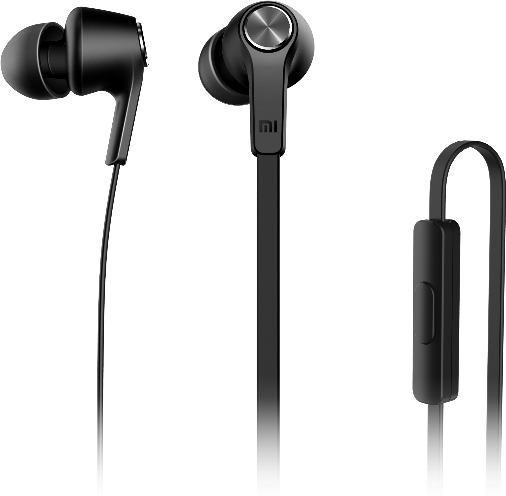
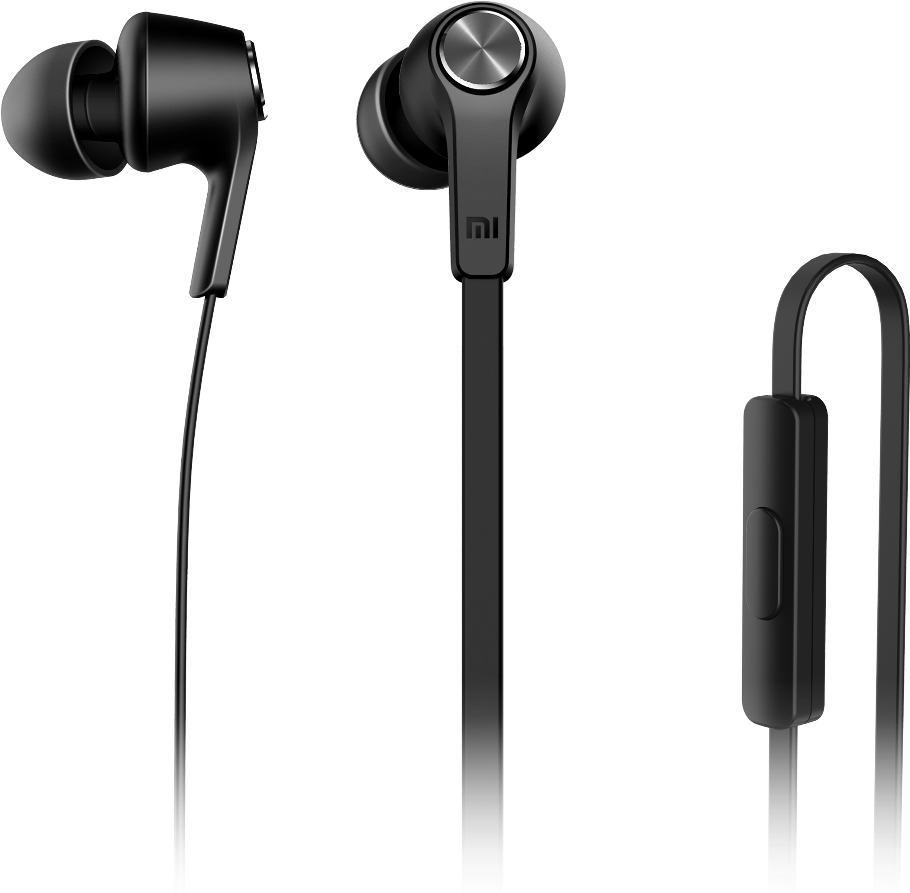
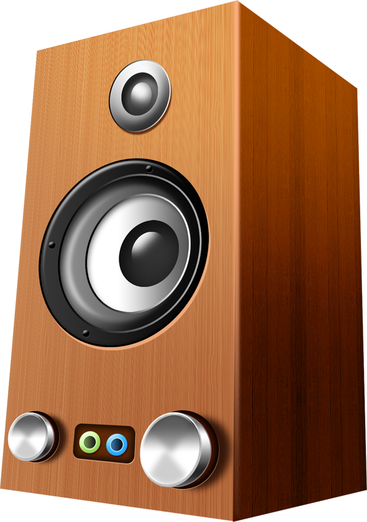
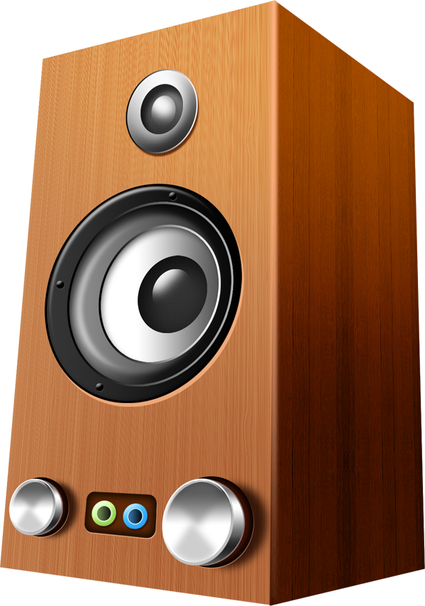

As clearly visible from the above animation,
Headphones are better than Earphones
Recent reports from the Web have proofed that Headphones
are safer to be used for long hours as compared to Earphones.
Though it was clearly mentoined that both should'nt be used
for very long hours. Earbuds can push earwax deeper into
the ears, causing blockages that affect your hearing,
making you raise the volume even more. Over-the-ear headphones
are a much better choice. They deliver a richer
sound experience than earphones. Being able to cover
your whole ear they directs the sound waves straight
into your ear canal. This creates an immersive experience
that allows the listener to pick out minute details in
the audio. This is one of the many reasons they are
always prefered by musicians and gamers.
Earphones may be more convinient for our use,
but Headphones are always safer for our heath
Back to Contents!
Next Topic!
Studies have found that Listening to and performing music
reactivates areas of the brain associated with memory,
reasoning, speech and emotion, meaining
Listening to music
while stydying can help you memorize stuff more easily and efficiently. However, it is recommanded to listen to
something that does not have words, or if it does have words
, hopefully, it’ll be in a language that you don’t understand
at all, otherwise that’s going to distract you from the stuff
you’re trying to study. Music has been shown to be a substance-free
way to diminish feelings of anxiety, anger and arousal that
are the result of stressful tasks (i.e. everything students do)
Survesys and studies have proved that
Students who listen
to music while studying Score higher Grades.
Back to Contents!
Next Topic!
Loud music can damage the parts of your inner ear that detect sound and send signals to the brain
causing hearing loss, ringing or buzzing in the ear,
and increased sensitivity to sound (hyperacusis).
Repeated exposure to loud noise over the years affects how
quickly you develop hearing problems, even after exposure has stopped.
If someone hears loud music often, Especially with earbuds & headphones,
Permanent hearing loss can happen. This means
the person's hearing won't ever be as good as it once was.
Hence to avoid hearing loss, remember to turn down the
volume, especially when you're wearing headphones or ear
buds or listening to music in the car. You also might
want to give your ears a rest by not wearing headphones
or ear buds all the time.
Loud music,if heard for a long time can damage your ears permanently.
Music can play a great supporting role when it comes to aging.
When older people listen to music it can bring back memories, thoughts,
and feelings that may have otherwise been pushed to the back of their
minds. Communication might get increasingly difficult as one ages,
causing frustration on both ends of the conversation.
Listening to music
helps with communication abilities. Through being
able to focus on their favourite music,
elderly people can leave confusion and anxieties behind which gives them
the opportunity to relax and unwind. This sense of relaxation can also
help them to
get a good night’s sleep – something which some older and
vulnerable people can often struggle with.
Music provides a way for them to express themselves and
communicate with their caregivers.
Back to Contents!
Next Topic!

 

 
